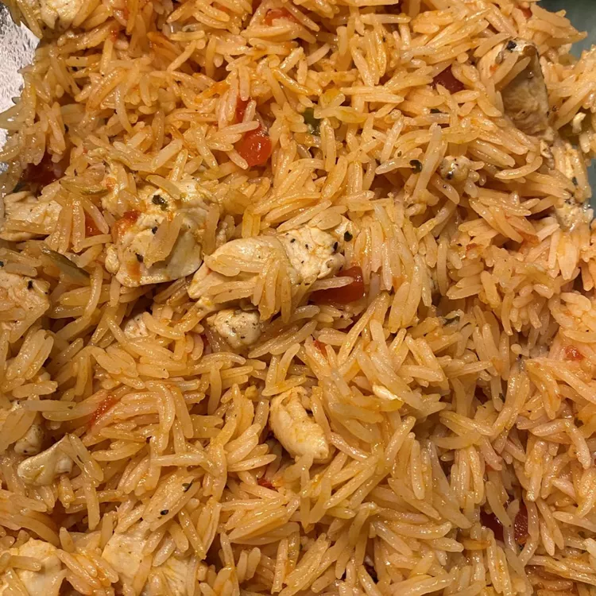

Chinese Fried Recipe

Description
This is the recipe for making the most delicious chinese fried rice
Ingredients
- 1 tablespoon olive oil
- 1 pound skinless, boneless chicken breast halves - cubed
- ¼ teaspoon salt
- ¼ teaspoon ground black pepper
- 1 (14.5 ounce) can chicken broth
- 1 (8 ounce) jar salsa
- 2 cups instant rice
- 8 ounces shredded Cheddar cheese
Steps
Step 1
- Heat olive oil in a large skillet over medium-high heat. Season chicken with salt and pepper. Cook and stir chicken in hot oil until cooked through and juices run clear, 5 to 7 minutes.
Step 2
- Add broth and salsa and bring to a boil; turn off the heat and stir in instant rice. Sprinkle Cheddar cheese over the mixture.
Step 3
- Cover the skillet and let it sit until rice is tender, about 5 minutes.